SpecOPD：面向推测解码的分支并行在策略蒸馏
SpecOPD 讨论的不是让大模型少思考，而是如何更便宜地把一个已经训练过的并行草稿模型继续训练好。Tianyu Liu、Jun Zhang、Wenjie Huang 等作者来自阿里巴巴 Qwen 业务团队，第一作者同时署名中国科学技术大学，合作机构还包括浙江大学、卡内基梅隆大学、爱丁堡大学、中国科学院大学和香港理工大学。论文于 2026 年 11 月 2 日提交首版，本笔记于 11 月 4 日阅读与核验。论文入口：arXiv:2611.02846。作者独立代码仓库 QwenApp/SpecOPD 已核验可访问；本轮未复现训练或服务性能。
并行草稿模型虽然能够一次提出一整块 token，推理加速仍受目标模型接受长度限制。在策略蒸馏可以突破既有草稿的接受长度平台期，但常规训练必须串行完成一次次草稿生成与目标验证，导致收集训练监督本身成为瓶颈。
1. 背景和问题
自回归模型的输出存在天然串行性：预测下一个词依赖之前已经选定的词。即使单个前向计算能够充分并行，生成数千个输出 token 仍要经历很多轮模型调用。推测解码利用小模型便宜、大模型验证多个位置相对高效这一差异，让草稿先提出若干候选 token，再交给目标模型并行验证；只要验证与拒绝采样按正确协议进行，最终采样分布仍由目标模型决定。它节省的是验证轮次，而不是直接把目标答案交给一个不受控制的小模型。草稿与目标在真实访问前缀上的吻合程度因此直接影响每轮能前进多少 token。
传统草稿如果也逐 token 自回归，就会在目标调用之外叠加小模型的串行开销。DFlash、DSpark 等并行草稿改为用一个较轻的网络一次预测一组位置，降低了提案成本。不过，草稿很快提出七个 token，不意味着目标会接受七个。第一步就偏离目标高概率区域时，后续即使局部看起来合理，也可能因为前面被拒绝而不能推进。本文把训练关注点放在这种接受长度上：一个已经较强的草稿在固定响应上继续监督学习，是否仍能匹配自己实际生成出的中间历史，而不是只在老师写好的轨迹上预测正确词？
离策略训练通常先准备目标模型生成的完整响应，再把其中 token 当标签。这样的数据便于批量组织，目标特征可以预计算，训练链路也比较规则。然而，服务时草稿访问到的是自己的候选前缀，包含其特有的措辞、错误和偏移；训练时始终看参考前缀，二者之间存在分布不一致。在策略蒸馏针对当前学生访问到的历史查询老师分布，在草稿自己的状态上校正它，因此可能在既有监督学习平台期之后继续改善接受长度。这里的关键监督是完整词表分布，不能简单理解成多收集一些正确答案文本。
问题在于，常规面向推测解码的在策略收集往往复用真实服务过程。草稿提出一块，老师验证，接受的前缀决定下一轮起点；于是下一轮收集必须等待上一轮的验证结果。为了得到一条完整响应，训练端反复经历这种依赖链，再切回回放、反向传播和权重更新。即使机器上有很多计算单元，也不能把同一条轨迹所有未来起点提前确定。本文首页给出的执行轨迹正是这种现象的实例，作者没有把“草稿单次前向并行”与“训练数据收集已经并行”混为一谈。
SpecOPD 提出的观察更窄也更有操作性：监督一个草稿块，不需要先把整条目标验证过的回答生成完。 已有参考响应可以提供外层上下文和锚点，当前草稿从每个锚点独立采样自己的短续写；老师只需在该锚点的参考前缀与这个分支自己的已采样历史上给出分布。两个锚点的分支互不等待，训练仍然接触当前草稿的状态，同时避免完整响应收集中的逐轮验证依赖。由此得到的是“参考上下文上的局部分支在策略”，不是无限制完整响应分布与在线 rollout 完全相同。
这一限制非常值得保留。参考响应决定训练可到达的外层语境，错误很长、偏离很深的服务轨迹未必被这些锚点充分覆盖。论文没有证明参考锚点采样与服务过程的全局状态分布相等。它提供的是一种有用的训练设计：用更多彼此独立的小分支承载局部暴露偏差，同时把原先重复执行的公共前缀合并。是否足够改善实际服务，需要接受长度和吞吐实验回答，不能只由“在策略”这个名称推导。
还有一个系统层面的难点：共享前缀不等于把所有分支简单拼接。全注意力模型用 token 级 KV 表示历史，稀疏注意力还包含压缩索引组，线性注意力把更早的历史压缩进递归状态。把分支放在同一个 batch 或树里，如果掩码、位置编号、索引组或递归状态不正确，老师给出的就不是该分支真实历史下的分布。这样得到的监督即使吞吐很高，也会训练一个错误目标。本文的技术分量主要在于同时处理这三种历史表示，而不只是在训练循环外面加一层并行调度。
对推荐与检索系统而言，直接收益场景是需要大量生成的用户意图理解、内容标注、推荐理由和搜索 Agent。若一条链路需要长输出且低并发，减少目标解码轮数可能有效；如果排序链路只输出几个标签，或服务本来处于高并发饱和状态，接受长度提高不一定转化成相同幅度的端到端收益。本文没有给出推荐 CTR 或线上业务效果，其可迁移价值首先是生成基础设施。把它视为推荐算法质量提升方法，会混淆模型执行效率和用户偏好建模两个问题。
阅读实验还必须区分三种速度。第一种是每秒训练更新多少步；第二种是每秒有多少参与损失的预测位置；第三种是最终部署时每秒输出多少 token。前两者允许一轮包含更多分支监督，后一种则受目标验证、并发、输出长度和调度影响。论文将它们分开报告，并在附录给出较多配置与统计说明。本笔记沿用这些分母，不把十六倍监督吞吐写成十六倍生成加速，也不把最高单场景加速写成所有工作负载平均水平。
此外，本文把草稿继续训练与目标模型能力训练分开：目标始终冻结，优化的是更好猜中目标后续分布的辅助网络。接受长度较长可以让同样的目标输出分布用更少验证轮次产生，但不会凭空增加目标在数学、代码或推荐偏好上的知识。若工程系统同时替换了目标权重、采样温度或工具环境，就不能再把所有收益归因于这篇方法。作者选择多类注意力目标，是为了检验监督执行的可迁移性；解释这组结果时仍应沿各自初始化做配对比较。这个定位也决定了后文公式应围绕条件历史与分布重合展开，而不是把它误读成普通强化学习的任务奖励优化。
2. 方法
2.1 提案树构造
输入是一条包含 prompt 和预收集响应的参考序列，以及当前草稿参数。作者从响应区域随机抽取多个锚点，每个锚点是一个已经确定的参考 token。草稿块第一个位置保留这个干净锚点，后面的掩码位置生成短续写；每个分支只使用自己的随机流。论文式一把第一个关键接口写成：
符号解释：$x$ 是参考序列，$a_b$ 是分支 $b$ 的锚点位置，$y_{b,<i}$ 是同一分支已采样的前缀，$h_{b,i}$ 是预测位置 $i$ 的完整条件历史，$q_\theta$ 是可训练草稿分布。这个定义使老师与草稿在同一历史下比较；它既保留参考前缀，也加入草稿自己造成的偏移。这里没有把参考轨迹后面的词偷放进条件中，分支之后也不会再切回参考答案来强迫对齐。
符号解释：$A$ 是所有锚点，$Y$ 是全部分支，$B$ 是分支数，$W$ 是每个分支的提案 token 数。式二的乘积分解说明，固定参考上下文与锚点后，各分支之间可以独立收集；一个分支内部仍有条件依赖。所谓分支并行，解除的是分支之间等待前一段验证的限制，并没有宣称语言建模的条件关系消失。实际并行草稿可以用自己的网络实现一次块预测，训练接口仍需要正确恢复每个位置的条件概率。
符号解释：$\pi$ 是树父节点映射，$\operatorname{pos}$ 是沿真实分支路径的语义位置。式三把参考序列作为主干，短续写挂在各自锚点下。后续注意力和位置编码必须根据这张树的路径计算，而不是根据内存中拼接后的数组下标计算。否则某分支会看到兄弟节点或参考未来，既破坏因果性，也改变目标模型应当提供的监督。
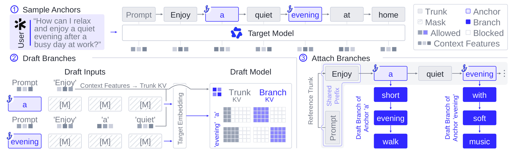
Figure 2 从左到右依次给出抽锚点、构造草稿输入、挂载分支三步。图中参考回答包含在家安静度过晚上的建议，两个锚点各自延伸出不同续写；这些英文词是原图用于解释分叉的示例，不是额外训练标签。左侧掩码块共享目标上下文特征与嵌入，但生成结果属于各自分支；右侧树保留公共主干，并让分支只继承各自锚点之前的祖先。它解释了并行的来源：两条分支无需知道对方接受了多少 token。与此同时，图中的公共主干也暴露了可复用计算，老师无需为每条短分支重新编码同一段 prompt。要读清两层区别：共享的是祖先计算，分歧之后的历史必须分开；分支独立也只是在给定锚点与参考序列之后成立。论文把这两层结构显式化，才有后面三种注意力执行器可以共同遵循的约束。图中蓝色分支词与灰色参考词的不同颜色，还明确区分了训练现场新采样的状态和离线给定的外层条件；没有这种区分，就很容易误把整棵树都视为老师预先写好的答案。
2.2 跨注意力架构的分支并行打分
树构造完成后，目标模型冻结，只负责给每个草稿位置生成完整词表监督。一个容易出错的细节是读出位置：预测某 token 的分布来自它的父节点隐藏状态，不是已经读入这个 token 之后的状态。参考主干先预填充一次，锚点状态可以直接预测第一枚分支 token；之后只需执行前面的分支 token 来预测下一枚。因此 $B$ 条长度为 $W$ 的分支，需要新增的打分行是 $B(W-1)$，最后一个样本本身不再产生新的查询行。
符号解释：$u_{b,i}$ 是被预测 token 的父节点，$H_u$ 是目标模型在节点 $u$ 后的隐藏状态，$g_p$ 是冻结目标输出头，$p_{b,i}$ 是目标分布。式四保证监督与历史匹配，避免把标签本身泄漏进老师输入。其输出不是目标选出的单个词，而是一整条分布，后面才能计算草稿与目标的重合程度。
符号解释：$M$ 是树注意力加性掩码，$\operatorname{Anc}(u)$ 是节点 $u$ 的严格祖先集合。式五允许节点读自己与祖先，屏蔽兄弟分支及未来主干。节点能读自己不会泄漏预测标签，因为式四使用父节点读出；这两条规则要一起看。旋转位置编码也使用语义位置而非打包偏移，从而使树中的一条路径与独立执行时具有一致的位置关系。
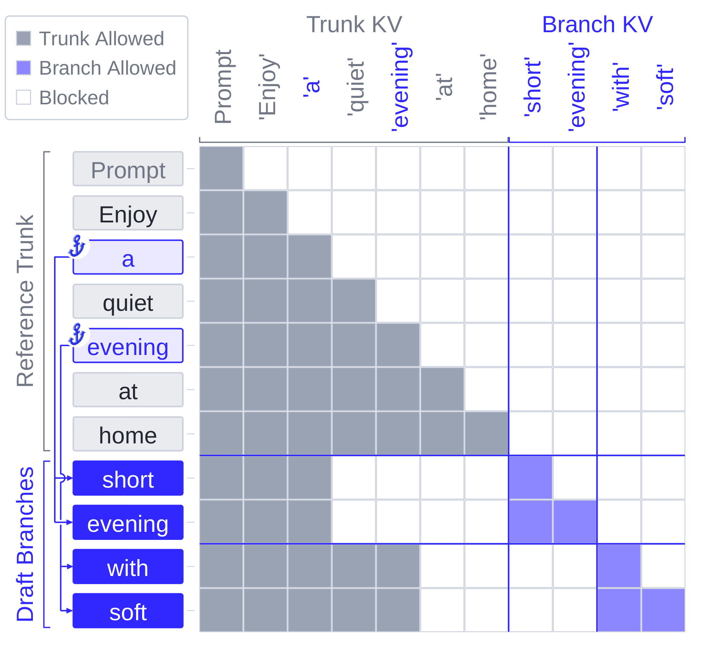
Figure 3 的行是查询、列是可以访问的 KV，灰色区域对应主干，蓝色对应分支，白色表示屏蔽。上半部分仍像普通因果注意力，下半部分却不能用一整块下三角矩阵代替，因为在打包数组里排得更早的兄弟分支不应成为当前历史。图中两条蓝色祖先箭头分别从锚点连到自己分支的查询行，示意公共主干可以被不同分支重复读取，但分支之间不互相读取。末尾的 walk 和 music 作为被预测样本，不需要新增查询行，这与父节点读出是一致的。这个图真正验证的是条件历史的隔离，而不是证明所有计算零开销。目标仍要执行分支新增行、计算输出头和分布，只是省掉了重复主干。若开发者只共享 KV 而沿用普通 packed causal mask，速度可能看起来更好，却会让目标监督包含错误祖先，训练语义随之改变。
稀疏注意力比全注意力多一层索引压缩。QSA 使用四个位置组成的压缩索引组，若锚点落在组内，直接复用参考组会把锚点后原本不属于分支的参考词混进去。完整落在锚点之前的组可以复用，跨过锚点的组必须沿分支重新构造。 论文给每个分支保留四槽原始索引余量，将未满的主干尾巴与新分支词组合，并让不完整尾部直接参与因果注意力，绕过 top-k 压缩组选择。
符号解释：$\kappa_{b,t}$ 是分支逻辑位置的原始索引 key，$\bar\kappa_{b,g}$ 是第 $g$ 个完成组的压缩 key，$C_g$ 包含平均池化、RMSNorm 与组首位置的旋转变换。式六仅适用于当前查询因果路径上已经完成的四词组；未完成尾部另行处理。它让块选择本身也遵循分支历史，不能只保证最终 KV 读取有掩码，而放任索引器提前看见未来。
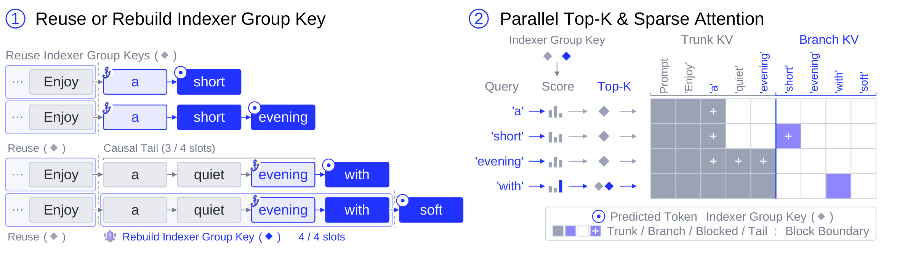
Figure 4 左侧展示同一条参考主干在不同分支位置上如何完成四槽组。较早的完整组可以从主干缓存复用，边界处只有三枚有效词时先作为因果尾部；新分支词补齐第四个位置之后，才生成该分支独有的压缩 key。右侧把这些组送入并行 top-k 与稀疏注意力，图例区分主干、分支、屏蔽和尾部。以 evening 锚点为例，预测 with 时查询读的是锚点状态，a、quiet、evening 仍只是三槽尾部；随后用 with 查询预测 soft，才把新词写入完成组。这样处理避免复用参考路径上的 at 等未来词。它说明稀疏模型的“历史一致”包含两部分：选哪些块的索引必须正确，被选中的 token KV 也必须正确。单独修改一个可见性 mask 无法修复已经被未来词污染的压缩索引。因此该执行器不是全注意力版本的简单参数替换，而是对索引状态生命周期的额外管理。
线性注意力又不同：GDN 把历史压成递归状态，一个最终状态不能仅靠掩码回到过去锚点。SpecOPD 在共享主干上缓存 FP32 检查点，再从最近检查点重放到锚点；每条分支把状态复制进自己的计算路径，之后单独推进。缓存的主干特征可以复用，检查点必须保持不变，因果卷积历史同样要遵循父节点映射。
符号解释：$S_{c_b}$ 是不晚于锚点的最近检查点状态，$z$ 包含 GDN 更新所需的 key、value、门控与更新参数，$F$ 是单步递归更新，$S_{b,0}$ 是重放恢复的锚点状态。式七将重复运行完整前缀变成短后缀重放，但并未消除分支内部递归。线程块各自装载状态切片，路径之间并行推进；需要重放多少历史取决于检查点间隔。
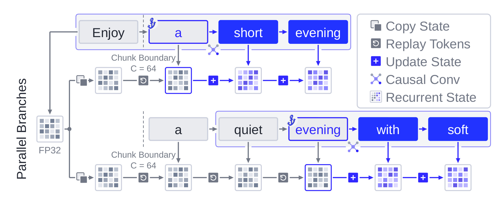
Figure 5 用两条分支说明状态恢复过程。共享主干在长度为六十四的分块边界保存 FP32 GDN 状态，图里省略了更早的六十三个 prompt token。上面一条路径只需从检查点重放到 a，下面一条要继续重放 quiet 和 evening，才到达自己的锚点。蓝色方块之后的状态更新属于各自分支，不能写回共同检查点；右上角的图例还把复制、重放、更新、因果卷积和递归状态区分开。由此可以看出，检查点共享减少的是存储与公共前缀执行，分支状态仍要私有化。读者也不能把图中的箭头理解为一次纯注意力矩阵乘法：GDN 的更新有自身顺序，作者通过索引路径与批处理获得跨分支并行。若卷积缓冲仍沿打包顺序访问，或者检查点被后续分支原地修改，即使递归公式正确，也会产生条件历史错误。该图的价值正是把这些隐藏状态依赖从“缓存实现细节”提升成训练监督正确性的组成部分。检查点间隔也形成时间与内存折中：保存得更密可以少重放，但需要更多状态存储；本文采用的边界只是实现配置，并非所有模型的最优选择。
2.3 接受长度优化
得到分支上正确的目标分布之后，训练还需要一个与接受长度相关的目标。作者沿用 Bebop 的 E2E-TV 思路，先计算固定历史下两个分布的重合概率，再累乘前缀生存项。训练不会对采样出的离散词和目标分布求导，而是对草稿概率及其前缀乘积求导；每轮更新重新采样分支，以跟上当前草稿。
符号解释：$v$ 遍历词表，$\alpha_{b,i}$ 是固定历史下的草稿与目标分布重合，$\operatorname{TV}$ 是总变差距离。式八把监督从单个正确词扩展到全词表形状。某位置重合不足，不仅影响这个 token，还会使后面的候选失去被共同接受的机会，因此单独逐词优化平均交叉熵不一定对应每轮推进长度。
符号解释：$B$ 和 $W$ 分别是分支数与每个分支的提案长度，内层乘积表示到位置 $j$ 为止的前缀重合项，外层求和汇总各前缀，再归一化得到要最小化的损失。式九让前部不匹配影响多个后续项，突出早期接受率的作用。不过，对于带条件的提案过程，前缀乘积是训练代理，不是服务接受长度的无偏估计。 草稿路径分布和真实拒绝采样过程并非完全等同，不能从公式直接推出吞吐收益；它的合理性由后面的实际接受长度与服务测量共同支撑。参考上下文也仍然限制了训练状态覆盖，因此本文应理解为可执行的局部在策略蒸馏方案，而不是完整在线数据生成的等价替代定理。
3. 实验结果
3.1 模型、工作负载与指标口径
实验跨三个目标架构：Qwen3-8B 配 DFlash 和 DSpark，代表全注意力；Qwen3.8-27B 配 DFlash V2，代表全注意力与 GDN 混合；Qwen3.8-Flash-Next-125B 配 DFlash V2，代表稀疏注意力与 GDN 混合。训练使用 Open-PerfectBlend 参考序列并在更新时生成新分支，目标模型保持冻结。多架构覆盖的意义是验证共享树接口能适配不同历史表示，不等于同一配置在不同规模之间具有可直接比较的成本收益。尤其是 125B 草稿由作者内部预训练，与公开版本的起点和数据覆盖有差异。
工作负载包括 MT-Bench、HumanEval、MATH-500，以及录制的 SWE、Terminal 交互历史。最后两项衡量从已有交互上下文继续生成的效率，不是重新执行完整软件任务、比较最终任务成功率。主表分别在贪心与采样温度下比较，通常提出七个草稿 token，并使用一条训练线选择的检查点。接受长度按请求统计每次验证推进的 completion token 数，包含 bonus token，再对各基准等权平均。这个定义解释了为什么平均值可以超过纯草稿接受个数，也说明不同表若任务集合不同，均值不能直接相减。
训练效率以参与损失的预测位置为监督 token，并不把所有输入上下文、共享主干或 padding 都计入监督分母。服务效率则报告输出 token 每秒。前缀生存变化使用百分点，接受长度相对提升使用百分比。多个统计口径在这篇论文里同时出现，阅读时应先找分母，再讨论收益大小。作者没有给出所有实验的多随机种子置信区间，也没有独立复现实验；下文数值都是论文报告，本轮仅核对原文和表格。
3.2 接受长度与真实生成吞吐
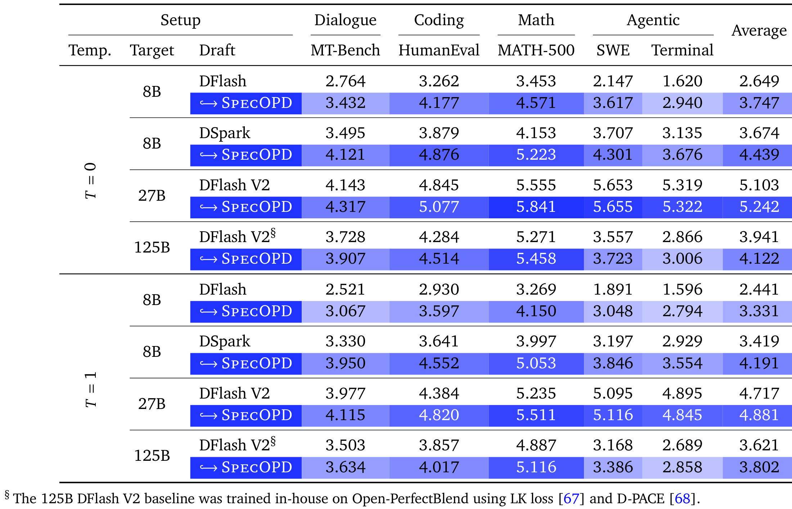
Table 1 的行按温度、目标规模和草稿类型组织，列把对话、编码、数学、两类 Agent 历史与五基准平均值分开。最大平均收益出现在八十亿目标配 DFlash 的贪心设置：平均接受长度从 2.649 到 3.747，增加约百分之四十一点四五；Terminal 从 1.620 到 2.940，相对增加约百分之八十一点五一。这不是所有架构共享的幅度。二百七十亿目标的贪心均值仅从 5.103 到 5.242，采样均值从 4.717 到 4.881；一千二百五十亿目标的两种温度均值分别从 3.941 到 4.122、3.621 到 3.802。更强初始草稿可能已经很接近自身平台，架构与数据也会影响继续训练空间，不能把规模差异单归因于某一个因素。还要看负向单元格：二百七十亿目标在采样温度下的 Terminal 从 4.895 降到 4.845，尽管总均值提高。该表支持“所有被测目标的五任务均值改善”，不支持“所有任务和温度都改善”，更不支持下游回答质量提升的结论。
上述差异还有实际含义。若现有草稿已经把简单文本任务做得很好，继续蒸馏的边际收益可能较小；如果 Agent 历史与预训练数据差距大，训练覆盖和局部分支是否能捕捉这种状态更加关键。论文提到内部训练的一千二百五十亿草稿没有 Agent 数据，后续加入这些轨迹是自然方向，但尚未给出这一新实验。对于已有线上草稿，应该先按实际用户任务、输出长度和并发检查局部收益，而不能依据八十亿模型的最大涨幅直接估算成本节约。
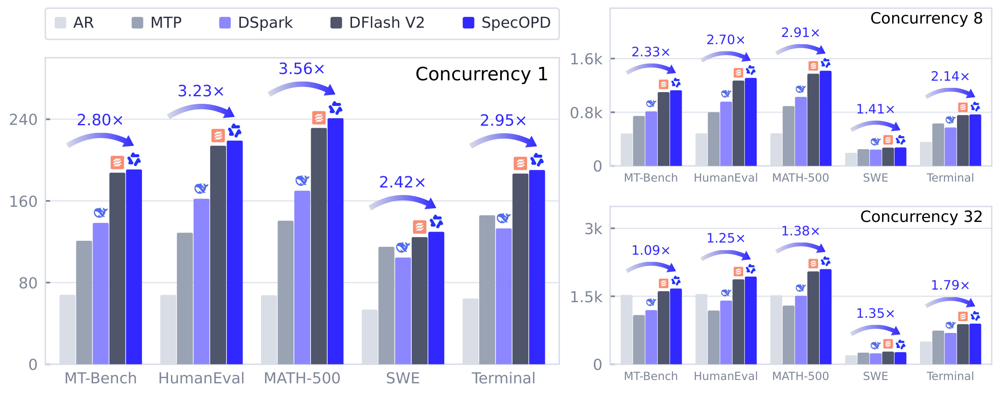
Figure 6 的柱高是真实输出吞吐，三个面板分别对应并发一、八、三十二；同组包含自回归、MTP、DSpark、原始 DFlash V2 与 SpecOPD。图上标注的最大三点五六倍来自低并发数学任务相对于自回归的比较。五任务几何平均加速在三档并发下分别约为二点九七、二点二三、一点三五倍，说明低并发下减少验证轮次更容易变成吞吐优势，高并发时目标计算已被更多请求填满，额外草稿开销会稀释收益。更贴近“继续训练是否值得”的比较是对原始 DFlash V2：作者报告几何平均吞吐最高仅提高百分之二点八三，并且三十二并发 SWE 比原始草稿更慢。因此这张图包含两层结论：推测解码相对自回归有较大空间，SpecOPD 相对一个已经较强的草稿改善较小且依赖负载。把二者的分母混在一起，会严重夸大本文新增训练方案的线上价值。附录的测量协议还固定权重精度、TP、FA3、CUDA Graphs、请求列表与 CPU affinity，说明这些数字属于一个具体服务配置。
3.3 训练吞吐与执行轨迹
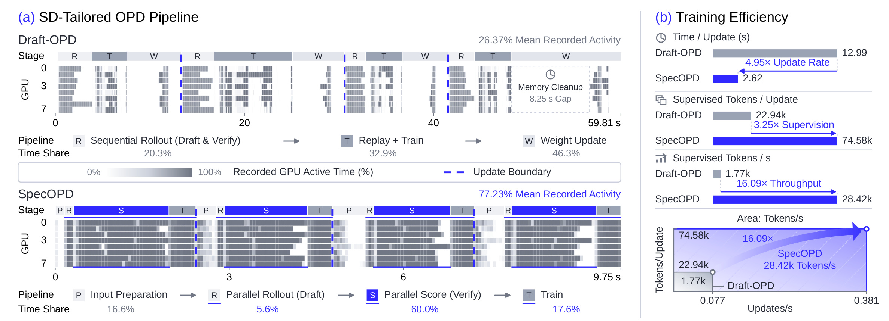
Figure 1 左侧上下两段使用各自时间轴，不能把横向相同像素宽度直接当成相同墙钟时间。上方 Draft-OPD 在串行收集、回放训练和权重更新之间交替，下方 SpecOPD 将输入准备、并行草稿、并行目标打分和训练组织成较密集的阶段。图中示例窗口记录的平均 GPU 活跃度由百分之二十六点三七变成百分之七十七点二三，体现设备空闲减少；这属于一个执行轨迹的说明，不能据此断言所有训练规模都达到相同利用率。右侧则把速度分解成每轮耗时、每轮监督位置与二者组合。原配置每次更新约十二点九九秒，对照配置约二点六二秒，同时监督预测从约二点二九万增加到七点四六万。更快更新和更多监督共同产生高 token 吞吐，图不是一项同样监督数、同样优化轨迹的单因素实验。离线准备参考数据的费用没有算进这段训练测量，对需要频繁重建参考语料的场景应另行记账。
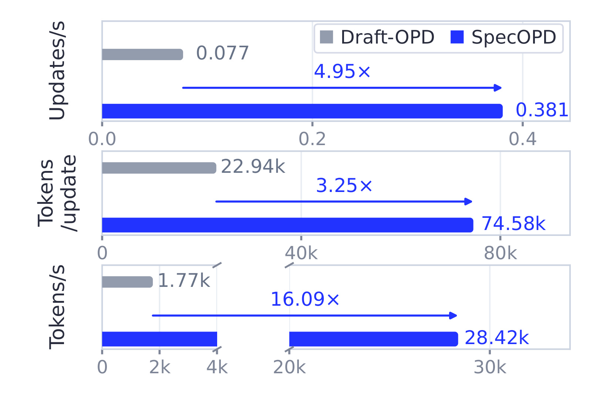
Figure 7 将三个分母画成独立条形图：更新速度从每秒约零点零七七次到零点三八一次，每次监督位置从二点二九万到七点四六万，参与损失的预测吞吐从每秒约一千七百七十到二万八千四百二十。四点九五倍与三点二五倍相乘约为十六点零九倍，正是标题级数字的来源。纵轴文字容易让人忽略每次更新的训练量已经变化，因此要将它解释为作者原生训练配方的系统吞吐比较。相同八张高性能 GPU 让硬件规模有一定控制，但并不自动控制目标分工、分支数、归一化、优化步骤所见数据及参考准备开销。用于工程估算时，可先问目标是缩短一次更新、提升单位墙钟监督密度，还是达到同等接受长度所需的总训练费用；这张图直接回答前两项，第三项还需要把收敛步数、预处理和部署收益一并核算。它对本文最有力的支持，是显示依赖链被打破之后机器能处理更多有效预测，而不是证明任意模型都能在相同预算下提高十六倍学习效率。
训练吞吐的收益并非来自跳过目标监督。共享参考主干只是减少重复前缀编码，目标仍必须对各分支自己的历史打分。若分支数增大，输出头、分支 KV 和线性状态也会带来新成本；当这些新增部分占主导时，共享前缀收益就会递减。论文附录的解析成本图把投影与前馈行数、注意力工作和条件墙钟收益分开，说明理论工作减少与实测总速度不是同一个量。本笔记没有截取那张附录解析图，具体边界仍应按正文实测数字理解。
3.4 在策略训练证据与对齐边界
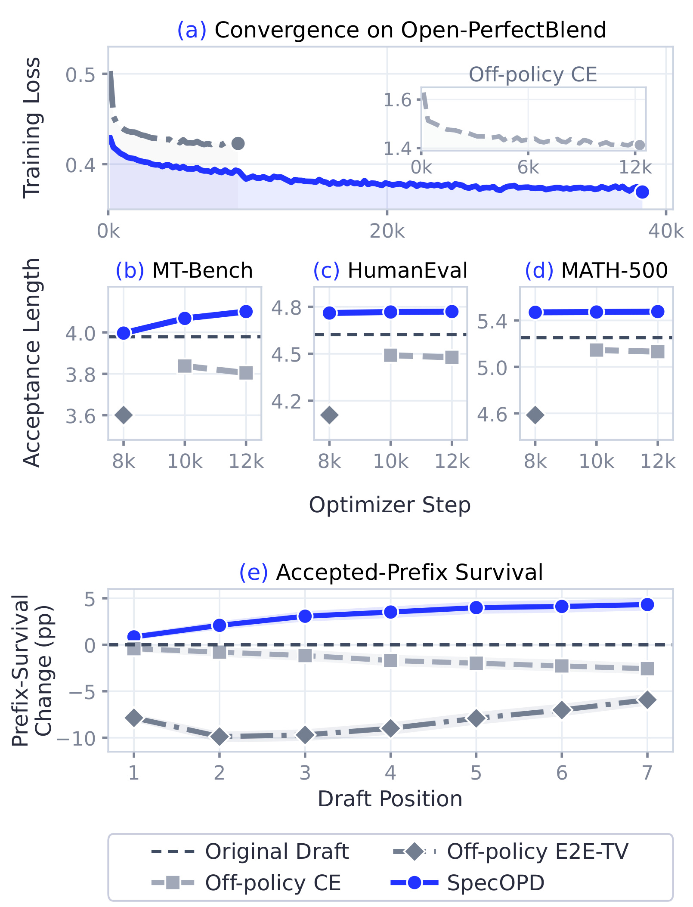
Figure 8 上部呈现损失下降，中部按三个标准任务展示接受长度，下部沿七个草稿位置展示相对初始模型的前缀生存变化。离策略交叉熵和离策略 E2E-TV 的训练损失都可以降低，但被测检查点接受长度反而低于起点；SpecOPD 则在这些检查点提升接受长度。第七位置的前缀生存增加四点三三个百分点，而离策略交叉熵下降二点五七个百分点，说明只盯损失曲线容易错过服务目标退化。阴影来自八百二十四个配对请求、按问题聚类的点置信区间；它描述请求层面的变动，不是多次独立训练的种子不确定性。对图中三个任务等权平均与每请求等权的前缀曲线，也不能假设其权重完全相同。作者在各方法的最佳被测接受长度检查点上做比较，读者还应关注检查点选择机会是否匹配。这个实验支持在当前配方下，草稿访问历史上的监督更有利于维持前缀生存，但仍需下面的计算资源差异限制来解释因果强度。
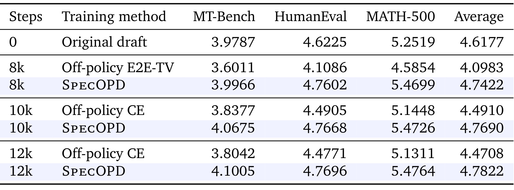
Table 2 给出图中比较的具体均值。共同起点三任务平均接受长度为 4.6177，八千步离策略 E2E-TV 为 4.0983，SpecOPD 为 4.7422；一万二千步离策略交叉熵为 4.4708，SpecOPD 为 4.7822。这样可以直接看见前者是否跌破起点，避免只报告对某个退化基线的相对提升。相同步数和参考序列批次并不等于相同总算力：附录说明离策略运行使用十六张高性能卡，SpecOPD 使用三十二张，草稿与目标 rank 分配也不同，且梯度路径不同。因此它是几种完整训练配方的比较，不能当作只切换数据是否在策略的严格同算力消融。还有一个阅读细节，主表的五任务平均值与本表的三任务均值不是相同统计量，不能把本表起点与主表直接比较为训练提升。对复现而言，这张表最实用的启发是同时保存起点、多个训练步数、参考序列呈现次数和真实硬件费用，才能区分继续训练改善、基线退化和预算放大带来的效应。
该表各列仍是接受长度，不是数学正确率；目标回答分布不变时，不能用这些小数变化推算任务准确率的百分点。
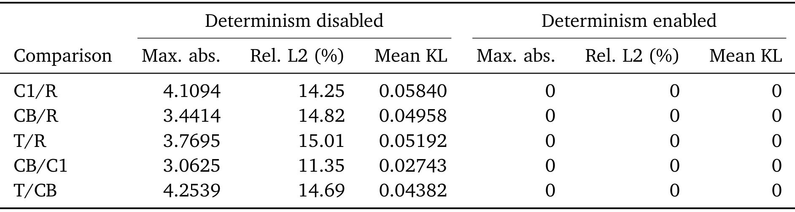
Table 4 针对一千二百五十亿目标检查老师打分是否因执行布局而改变。行比较逐分支、批量分支、树执行和参考路径，列同时报告最大绝对差、相对二范数误差与平均 KL；关闭确定性时，可出现数值上相当显著的差异，例如最大绝对差超过四、相对二范数误差约百分之十五。打开论文定义的确定性设置后，这组测试里的差异均为零。其意义是架构上的因果正确还不够，压缩 top-k 选择、排序与遍历细节也可能让相同历史产生不同 target distribution。作者通过确定性对齐验证具体实现，读者不应把关闭开关的非零误差全解释为训练方法无效，也不能把这张有限样本表提升为所有硬件与所有输入下的位级一致性保证。真正落地时应把目标前向的布局一致性测试纳入验收，而不是只验证最终损失有穷、显存不溢出。该表也提醒，某个更快实现可能改变数值路径和监督分布，是否保留原目标需要单独检查。
附录还检查了八十亿草稿在不同推理窗口下的效果。所有权重以窗口十六训练，再在窗口八或十六推理；训练与窗口选择之间存在正交互，但不能把更大窗口带来的预算增加全部归为草稿质量。作者用共同锚点上的前七个接受 token 指标作补充，缓解两个窗口覆盖位置不同的问题。这类检查比单纯展示总接受长度更有解释力。本文没有为所有附录曲线逐一插图，但全量图表审计已记录其位置、主题和省略理由；主文关键结构、主结果、吞吐与训练对照都已保留。
4. 总结
SpecOPD 最有价值的贡献是把“当前草稿历史上的监督”和“完整在线响应的串行收集”拆开。它利用参考锚点获得很多短分支，再用树共享公共前缀，使训练可以同时保持局部在策略性与较高设备利用率。更难的部分是把这套思路落实到混合架构：全注意力检查祖先可见性，稀疏注意力检查压缩组的分支一致性，线性注意力检查递归与卷积状态恢复。三者共享同一树语义，但需要不同执行器；这比一个只展示训练加速曲线的工作更适合作为系统实现参考。
个人判断是，这种设计优先适合已有较强并行草稿、仍有大量低并发长生成需求的团队。若部署端只有很小的接受长度空间，或者算力瓶颈已经转移到目标输出头、带宽和高并发调度，训练吞吐增加未必迅速回本。本文对原始强草稿的实际吞吐改善远小于相对于自回归的三点五六倍，因此评估时应使用自己当前的最好部署版本作分母。推荐系统的内容理解和复杂意图 Agent 可以借鉴，但不应因此推断召回效果或广告收益提高。
需要保留四类限制。第一，外层上下文来自预收集参考，局部分支不覆盖所有深度偏离状态，长程错误传播仍可能遗漏。第二，E2E-TV 前缀积是代理目标，服务接受长度与真实吞吐必须独立测量；训练损失降低也不保证接受更长。第三，原生吞吐与离策略消融存在监督密度、硬件配置和梯度路径差异，十六点零九倍不能解释为同预算收敛优势。第四，数据与架构覆盖仍有限，二百七十亿采样 Terminal 和三十二并发 SWE 的负向结果表明不存在逐项普适收益。除此之外，参考准备费用、确定性开关成本与检查点选择成本也应纳入端到端账本，而不是只报告核心训练窗口。
后续可从三个具体实验推进。首先，复用作者仓库，在自己的目标架构上验证独立分支、批量分支与树执行的 logits 一致性，特别检查稀疏块边界和 GDN 卷积缓冲；这直接决定训练监督是否忠实。其次，按相同监督位置数、相同目标 GPU 时间与相同达到接受长度分别做预算对照，拆清并行调度、在策略数据和目标函数各自作用；这样才能判断训练费用而不是只比较更新速度。最后，用真实流量的任务长度、并发和分布漂移回放服务，既报告相对自回归，也报告相对当前最好草稿的收益，并追踪长尾负向任务。对于 Agent 场景，还应区分续写效率与最终任务完成率，防止把历史回放吞吐误当作自主行动能力。
部署判断还应增加一次训练摊销核算：把新增草稿训练与离线参考准备的总费用，除以每请求相对现有最好草稿节约的实际费用，得到大致回本请求量。若请求分布变化很快，需要反复训练，单次实验的吞吐优势也可能被维护成本抵消。论文没有给出这个生产账本，因此这里只提出应测量的量，不填写无法验证的回本数字。
本轮完成的是论文原文、表格、方法公式与代码入口的技术核验，没有重新训练草稿，也没有执行线上实验。论文的强结论应限定为其测试配置中的分支并行监督吞吐与接受长度改善；更广泛的收益需要结合目标模型、数据覆盖、确定性实现和生产并发重新验证。